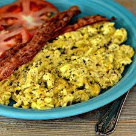

Pesto scrambled eggs

Description
What more can I say ... it's delicious (might not sound it, but it is) ... try it! Serve on toast if you want.
Ingredients
- 1 tablespoon vegetable oil
- 1 egg, lightly beaten
- ¼ cup shredded Cheddar cheese
- salt and pepper to taste
- ½ teaspoon pesto
Steps
- Heat oil in a skillet over medium heat. In a small bowl, combine egg, Cheddar cheese, salt and pepper. Pour into pan, and cook stirring for 3 to 5 minutes, or until desired doneness. Remove from heat, and stir in pesto.